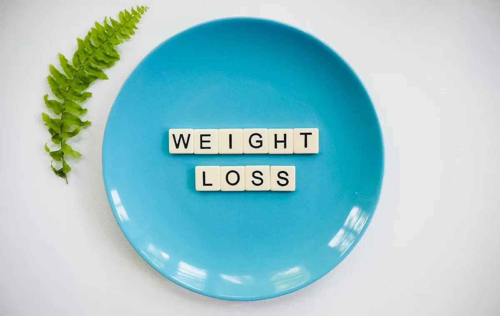
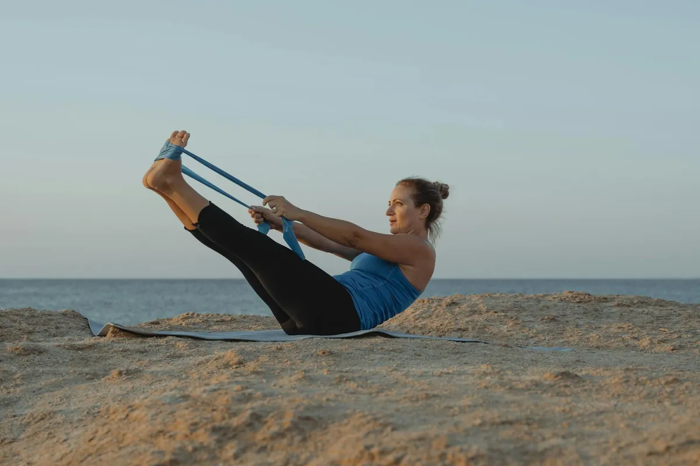
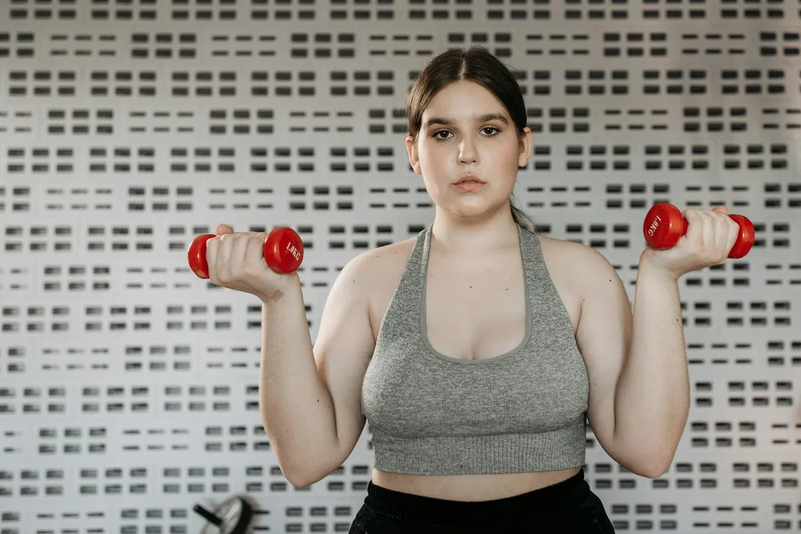

Practical habits that help you feel better, daily
Evidence-informed health guides for US readers on sleep, longevity, and gut health.
Latest Articles
Unlock Your Mobility: Simple Diet & Movement Tips for Joint Comfort

Eat for Energy: Top Anti-Inflammatory Foods to Heal Your Body

Pain-Free Joints: Nutrition and Exercise Tips for a More Mobile You

Busy Pro's Guide to Speedy, Healthy Eating

Simple Daily Routines for a Healthier, Longer Life

How to Maintain Strength and Independence Daily
Feeling Drained? Prevent Burnout with These Tips
How to Meditate Simply: Your Beginner's Breathing Guide
Practical Tips for Eating Fermented Foods Today
Struggling to Sleep? Try This Reset